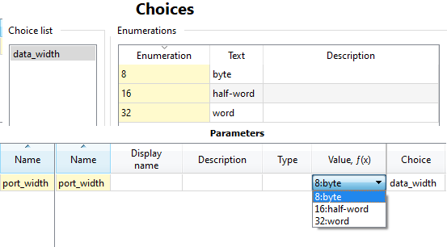

The choices editor lists the configuration elements of the component. A choice provides a set of possible values for parameters, module parameters and other configurable elements within the containing component.
Choices are identified by a mandatory name in the Choice list.
Each choice must have at least one enumeration defined. An enumeration has a mandatory value, an optional text to display instead of the value and an optional description. When the value of e.g. a parameter refers to the choice, the possible model parameter value is selected from the set of enumerations in that choice.
EXAMPLE. The choice is used to limit the possible parameter values to 8, 16 or 32 (bits).
